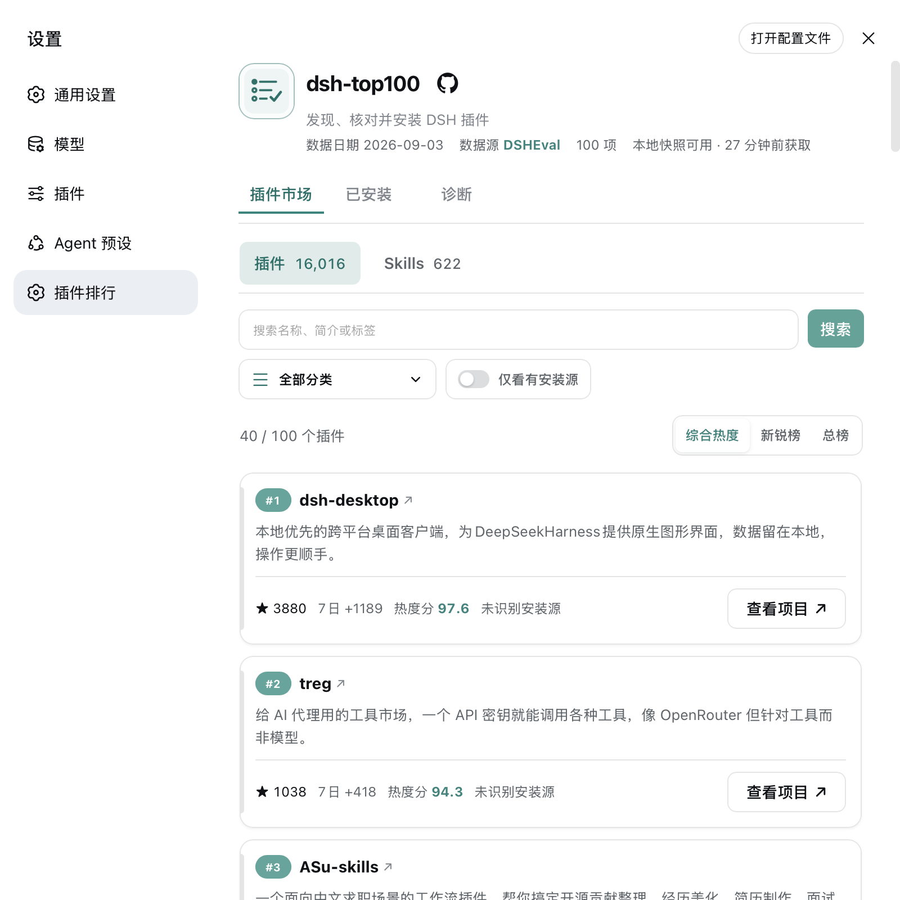
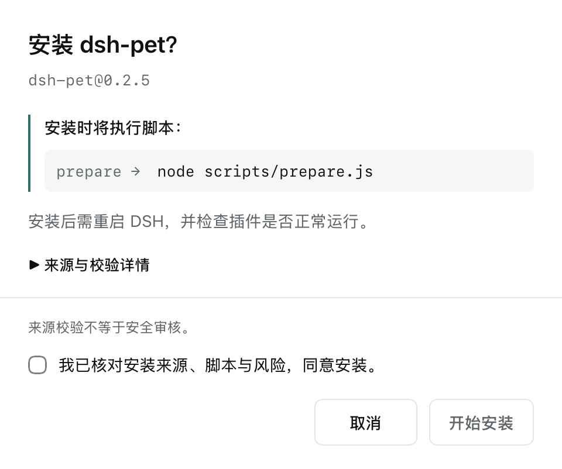

<div class="docs-layout dsh-guide">
  <article class="docs-content">
    <div class="dsh-prerequisites">
      <p class="dsh-requirements">开始前确认：<strong>DSH Web 0.1.0-rc.6+</strong> · <strong>Node.js 22.13+</strong></p>
      <p class="dsh-scope-note">以下只安装 dsh-top100，不会自动安装榜单中的项目。</p>
    </div>

    <section class="doc-section" id="install" aria-label="安装步骤">
      <ol class="dsh-install-steps" role="list">
        <li class="dsh-install-step">
          <span class="dsh-step-number" aria-hidden="true">1</span>
          <div class="dsh-step-content">
            <h2>安装榜单插件</h2>
            <p>打开终端或 PowerShell，在 DSH 源码目录外运行：</p>
            <div class="dsh-command-row">
              <code class="dsh-install-command">npx @deepseek-ai/dsh plugin --profile web add @dsheval/dsh-top100-plugin@1.3.1</code>
              <button class="dsh-copy-button" type="button" data-copy-command="npx @deepseek-ai/dsh plugin --profile web add @dsheval/dsh-top100-plugin@1.3.1" aria-label="复制插件安装命令">复制</button>
            </div>
            <p>命令固定安装当前版本。</p>
          </div>
        </li>
        <li class="dsh-install-step">
          <span class="dsh-step-number" aria-hidden="true">2</span>
          <div class="dsh-step-content">
            <h2>启动 DSH Web</h2>
            <p>安装完成后，在同一个终端运行：</p>
            <div class="dsh-command-row">
              <code class="dsh-install-command">npx @deepseek-ai/dsh web</code>
              <button class="dsh-copy-button" type="button" data-copy-command="npx @deepseek-ai/dsh web" aria-label="复制 DSH 启动命令">复制</button>
            </div>
          </div>
        </li>
        <li class="dsh-install-step">
          <span class="dsh-step-number" aria-hidden="true">3</span>
          <div class="dsh-step-content">
            <h2>进入插件排行</h2>
            <p>在 DSH Web 中依次打开：</p>
            <div class="dsh-open-target" aria-label="设置，然后打开插件排行">
              <span>设置</span><span aria-hidden="true">→</span><strong>插件排行</strong>
            </div>
            <p class="dsh-success">看到榜单后，在「已安装」中核对版本为 <span data-install-version>1.3.1</span>；若 DSH 已在运行，请先重启。</p>
          </div>
        </li>
      </ol>
    </section>

    <section class="doc-section" id="preview" aria-labelledby="preview-title">
      <h2 id="preview-title">安装后的界面</h2>
      <p class="dsh-section-intro">在插件市场搜索、筛选和浏览榜单。</p>
      <figure class="dsh-preview-item dsh-market-preview">
        <a class="dsh-preview-link" href="./assets/dsh-plugin-market.png" target="_blank" rel="noopener noreferrer" aria-label="查看插件市场大图（新标签页）">
          
        </a>
        <figcaption>本地开发版截图 · 点击查看大图</figcaption>
      </figure>
      <details class="dsh-detail dsh-install-example">
        <summary>如何安装榜单中的其他插件？</summary>
        <div class="dsh-detail-body">
          <p>点击项目的「安装」，核对版本、来源与脚本后再确认。安装后重启 DSH，并检查插件是否正常运行。</p>
          <p>没有「安装」按钮？点击「查看项目」，到项目仓库了解安装方式。<strong>来源校验不等于安全审核。</strong></p>
          <figure class="dsh-preview-item dsh-confirm-preview">
            <a class="dsh-preview-link" href="./assets/dsh-install-confirm.png" target="_blank" rel="noopener noreferrer" aria-label="查看安装确认大图（新标签页）">
              
            </a>
            <figcaption>安装确认示例：dsh-pet · 点击查看大图</figcaption>
          </figure>
        </div>
      </details>
    </section>

    <section class="doc-section" id="help" aria-labelledby="help-title">
      <h2 id="help-title">其他方式与帮助</h2>
      <details class="dsh-detail" id="other-methods">
        <summary>使用全局 dsh 或源码安装</summary>
        <div class="dsh-detail-body">
          <p>已在使用下面的方式？请沿用原来的方式安装。<strong>安装和启动必须使用相同的命令前缀，不要混用。</strong></p>
          <section class="dsh-method" aria-labelledby="global-method-title">
            <h3 id="global-method-title">已安装全局 dsh 命令</h3>
            <p>确认 <code>dsh --version</code> 能正常返回，再依次安装、启动：</p>
            <div class="dsh-command-group">
              <div class="dsh-command-row">
                <code class="dsh-install-command">dsh plugin --profile web add @dsheval/dsh-top100-plugin@1.3.1</code>
                <button class="dsh-copy-button" type="button" data-copy-command="dsh plugin --profile web add @dsheval/dsh-top100-plugin@1.3.1" aria-label="复制全局 CLI 安装命令">复制</button>
              </div>
              <div class="dsh-command-row">
                <code class="dsh-install-command">dsh web</code>
                <button class="dsh-copy-button" type="button" data-copy-command="dsh web" aria-label="复制全局 CLI 启动命令">复制</button>
              </div>
            </div>
          </section>
          <section class="dsh-method" aria-labelledby="source-method-title">
            <h3 id="source-method-title">从 DSH 源码运行</h3>
            <p>进入 DSH 源码仓库根目录，再依次安装、启动：</p>
            <div class="dsh-command-group">
              <div class="dsh-command-row">
                <code class="dsh-install-command">pnpm dsh plugin --profile web add @dsheval/dsh-top100-plugin@1.3.1</code>
                <button class="dsh-copy-button" type="button" data-copy-command="pnpm dsh plugin --profile web add @dsheval/dsh-top100-plugin@1.3.1" aria-label="复制源码方式安装命令">复制</button>
              </div>
              <div class="dsh-command-row">
                <code class="dsh-install-command">pnpm dsh web</code>
                <button class="dsh-copy-button" type="button" data-copy-command="pnpm dsh web" aria-label="复制源码方式启动命令">复制</button>
              </div>
            </div>
          </section>
        </div>
      </details>
      <details class="dsh-detail">
        <summary>安装后找不到「插件排行」</summary>
        <div class="dsh-detail-body">
          <ul class="dsh-help-list">
            <li>确认 DSH Web 版本为 0.1.0-rc.6 或更新版本。</li>
            <li>确认安装和启动用了相同的命令前缀，且使用 <code>web</code> profile。</li>
            <li>如果安装时 DSH 已在运行，用原来的方式重启，再刷新浏览器。</li>
          </ul>
        </div>
      </details>
      <details class="dsh-detail">
        <summary>npx 长时间没有输出</summary>
        <div class="dsh-detail-body">
          <p>先运行 <code>npx @deepseek-ai/dsh --version</code>。如果也一直没有输出，可能卡在依赖解析；停止命令，改用上面的源码方式。</p>
          <p>不要单独添加 <code>--legacy-peer-deps</code>，以免漏装运行时依赖。详见 <a href="https://github.com/deepseek-ai/deepseek-harness/discussions/3786" target="_blank" rel="noopener noreferrer">DSH 上游讨论</a>。</p>
        </div>
      </details>
      <details class="dsh-detail" id="features">
        <summary>版本与数据来源</summary>
        <div class="dsh-detail-body">
          <p>当前发布版本为 <a href="https://www.npmjs.com/package/@dsheval/dsh-top100-plugin/v/1.3.1" target="_blank" rel="noopener noreferrer">v1.3.1</a>。上面的命令固定安装此版本，不会自动选择旧版。</p>
          <p>数据来自 DSHeval 排行服务。网站与插件使用同一份榜单数据，每日更新。</p>
          <p>安装包包含排行插件和 <code>recommend-dsh-plugins</code> Skill，不包含采集程序、数据库或网站后端。</p>
        </div>
      </details>
    </section>
  </article>
</div>
